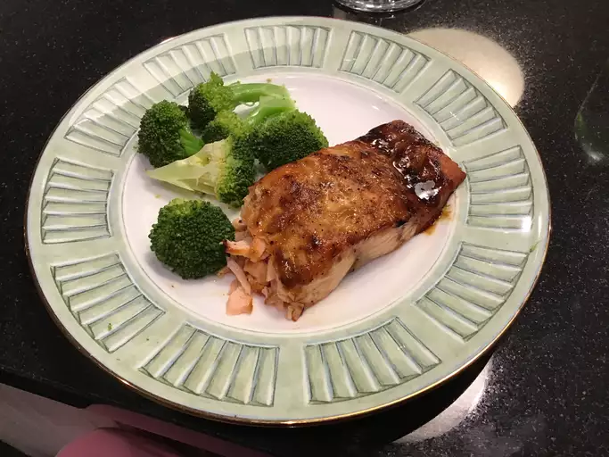

Salmon with Brown Sugar Glaze

Tasty Salmon with Brown Sugar Glaze
This delicious salmon is easy and quick to make and can be served with rice and broccoli
Ingredients
- Cooking spray
- 4 (6 ounce) boneless salmon fillets
- Salt and ground black pepper to taste
- 1/4 cup packed light brown sugar
- 2 tablespoons Dijon mustard
Directions
- Preheat the oven broiler and set an oven rack about 6 inches from the heat source. Grease the rack of a broiler pan with cooking spray
- Season salmon with salt and pepper, then place on the prepared broiler pan. Whisk together brown sugar and mustard in a small bowl; spoon mixture evenly over salmon
- Cook under the preheated broiler until fish flakes easily with a fork, 10 to 15 minutes.